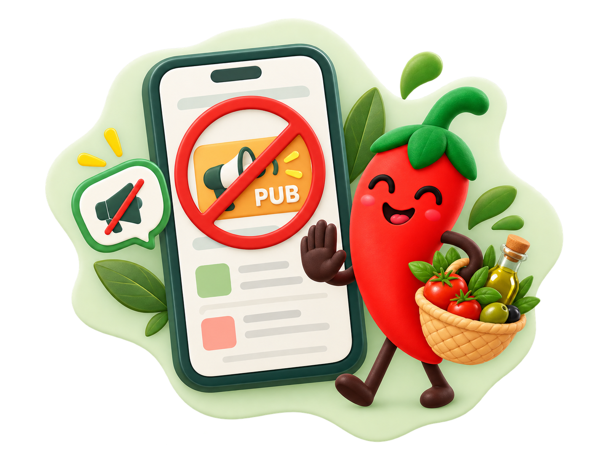
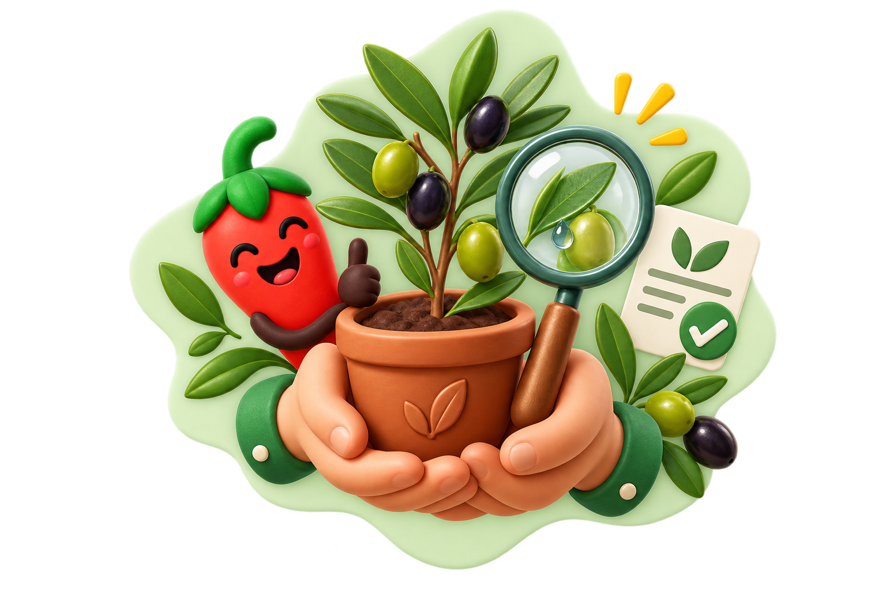
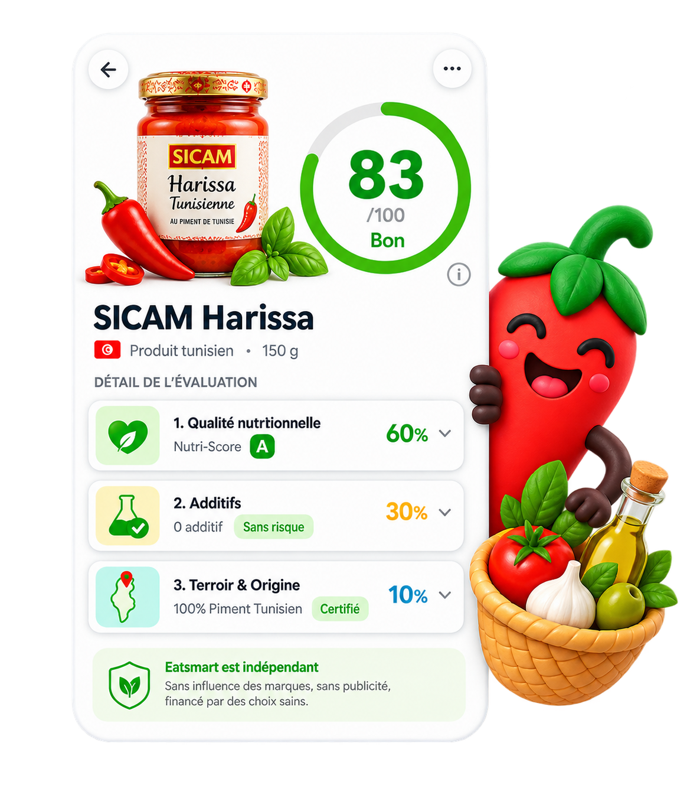
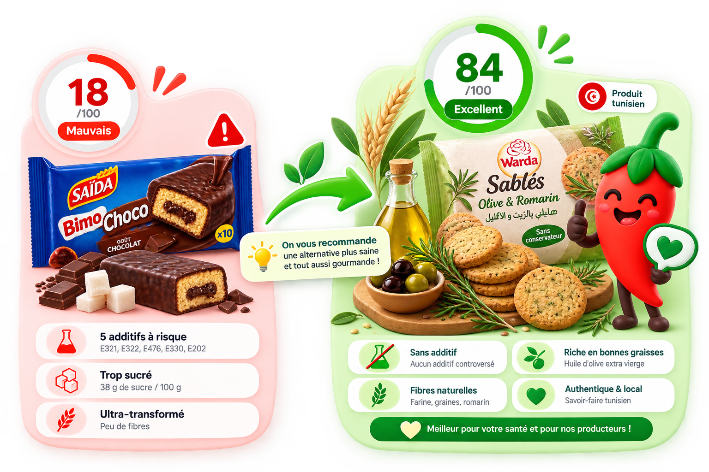
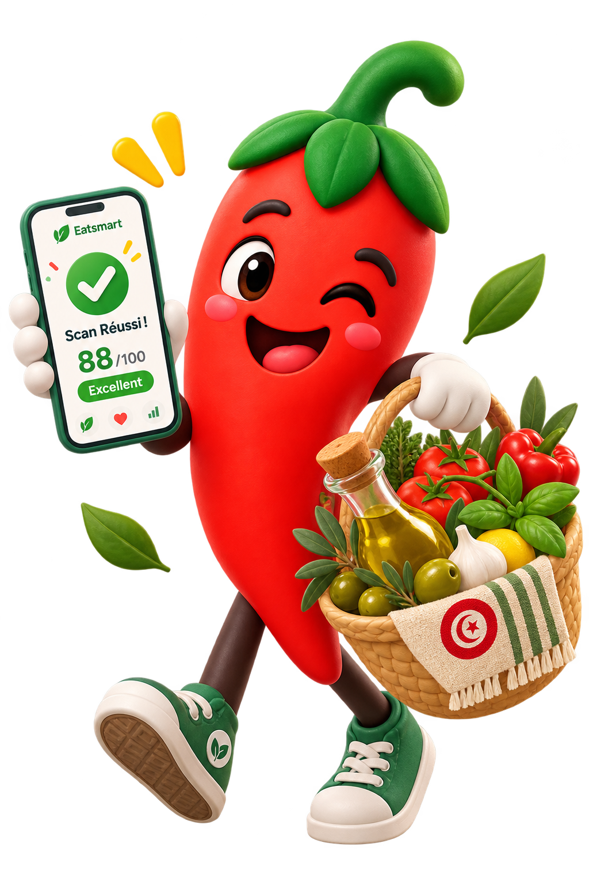

Zéro influence des marques
Aucun industriel ne peut modifier sa note, payer pour un classement avantageux ou orienter nos analyses.
Scannez le code-barres de vos produits en rayon pour obtenir un diagnostic nutritionnel clair, repérer les additifs indésirables et repérer de meilleures alternatives locales.


Notre seule mission est de fournir une information claire et objective sur vos aliments du quotidien.
Aucun industriel ne peut modifier sa note, payer pour un classement avantageux ou orienter nos analyses.

Vous ne trouverez aucune annonce sponsorisée pour orienter vos achats. L'application reste neutre et épurée.

Notre méthode de calcul repose sur la recherche scientifique publique et l'authenticité des produits du terroir.
Un score global de 0 à 100 calculé en toute indépendance selon 3 critères complémentaires :

Équilibre global : calcul selon les fibres, protéines, sucres, graisses saturées et sel (Nutri-Score).
Analyse médicale : détection systématique des conservateurs, colorants et émulsifiants selon leur niveau de risque.
Transparence totale : aucune publicité, aucun sponsor et financé uniquement par nos utilisateurs.
Filière locale : valorisation des ingrédients du terroir tunisien et des labels certifiés bio.

Si un article scanné présente un score insuffisant, l'application vous propose spontanément des produits équivalents et bien meilleurs pour votre santé, disponibles dans vos commerces habituels.
Découvrir dans l'applicationTéléchargez gratuitement Eatsmart sur iOS et Android pour scanner vos premiers produits en magasin.
